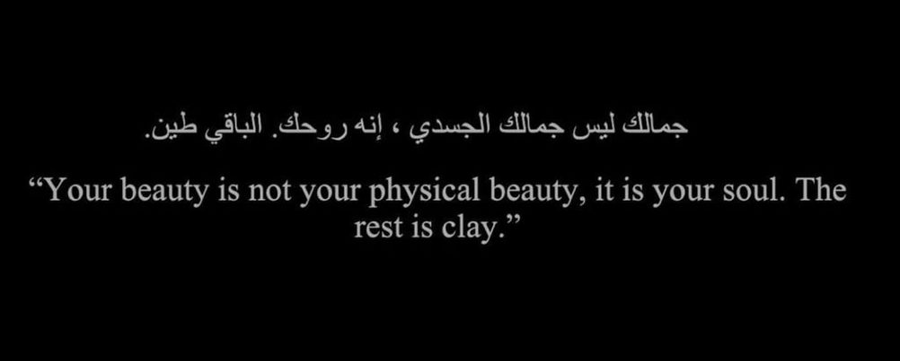

DHAMEYSTIRAN
Adna walaal,
Adna qurux badan, aad u jaceylsan iyo aad u macaane. Waa gabar aan jeclahay iyo aad u fududeynaya. Indhahaada ayaa ugu waaweyn, qalbigaada ayaa ugu cabbirka badan, iyo wajahadaada ayaa ugu dhadhaminta badan. Adna, aad ayaan ugu talinaynaa sida aad aan aduunka ugu jecelnayn.
Dhamaan waxa aad u baahan tahay waa aragtidaada oo is-xambaarsanaya farta iyo indhaada. Gacmahaaga caan ah wuxuu ku timaaddaa, quruxdoodu wuxuu ku qorfeeyaa, iyo wajahadaada wuxuu ku furoo. Adna, aad ayaan ugu tala galayaa go'aankaada iyo shaqooyinkaada oo fududaynaya.
Markaas, waxaan ku soo dhowaadayaa in aan ogaanno sidii aan ugu fududayn lahayn. Wuxuu ku dadaalaa oo u baahan yahay qaab cusub oo qalbiga ku shaqaynaya. Qalbigaagu waa mid aan jecleynayn, mid aan jaceyl iyo xanaanad laheyn.
Adna, waxaan kuu rajeynayaa sida aad igu qabto, oo aad igu aad u macaashaysanaya. Waxaan soo gudbinaysaa hadallo dhab ah oo jaceyl iyo dhawrsanbaad ku soo dhaweynayo. Marka hore, waxaan idiin sheegayaa qalbigaagu oo dhan. Waxaan kula kulmaysaa si aan u qanciyo jaceylka iyo xiriirka aan helaynay.
Ka soo jeeda qalbigaaga,
XABIBTY
- Cajebey cajiibeey,
Cawo iyo ayaaneey,
Caqligaad xadaysaa,
Caku! barashadaadii,
Iyo caabuqaagee,
Sida faras cag fududoo,
Cadda-horor yaqaannoo,
Gulufkiyo colaadaha,
Ninka lihi cad-goostaa,
Raggu kuu cugtamayaa;
Anna caashaqaagaan,
Hadba weel u culayaa,
Cimri-dherer hadhkaagaan,
Riyo kula caweeyaa.
Dhulka oo cagaaroo,
Cosobkii dul-saarraa,
Isagaan car-jabin weli,
Cabbanaan daraaddeed,
Ciidda hoose raantiyo,
Kula ciiray fooddoon,
Cagta meel la saaroo,
La cuskado lahaynoo,
Calcalyada xareeddii,
Halka godan cuslaysiyo;
Fiid-cawl horraantii,
Cirka oo daruuruhu,
Midab wada cillaaniyo,
Ku dhigeen canjiidaha,
Xilli ay cadceeddii,
Dhar cashmiira xidhan tahay,
Sagal caasha saaraad,
La wadaagtey caanoo,
Haddaan caawo kale jirin,
Cidi kaama garateen!
Geed cal iyo buur dheer,
Carro-hodan ku yaalloo,
Cokanoo irmaanoo,
Dhirta kale ka caynoo,
Cimilada agtiisiyo,
Rugtu qurux ku caan tahay;
Dusha sare caleentii,
Laamaha is-celisoo,
Hoobaan casuus lihi,
Cartamayso dhinacyada,
Ubaxuna tin iyo cidhib,
Kaga dhigay cabbaadhyada;
Shimbiraha ka ciyayaa,
Intay heeso curiyeen,
Isku camal wareereen,
Dabadeeto carashada,
Markii laysku cayn go’ay,
Isu ciidan doonteen;
Halcabbaara goortay,
Isu calan-waleeyeen,
Cadho kala maqnaayeen,
Cadcaadiigsi geedkii,
Ciddiyaha ku qariyeen,
Codka luuqda heestiyo,
Carrabkoodu kala tegay,
Carcaraha is daba maray,
Cudur jirey ku baaba’ay;
Dhallin caana diiddoo,
Guryihii ka caagtiyo,
Cadraddiyo barbaartii,
Sida goob ciyaareed,
Ugu soo carraabeen,
Calaf waa halkiisee,
Hadallada cawayskaas,
Ku calmaday u badan tahay!
Carshigaa nasahan baad,
Biyo wada cabteenoo,
Haddaan lay cadaabayn,
Rabbi ii cadhoonayn,
Dadku inuu ku caabudo,
Madowgiyo caddaankuba,
Ku caleemo saaraan,
Sow kuma canaanteen!